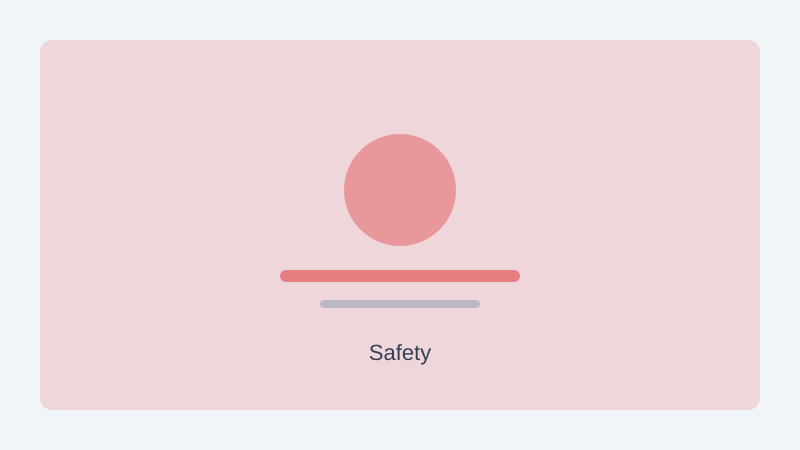

The Land Transport Authority has installed new pedestrian crossing signals at 12 locations near primary schools across the island. The upgraded crossings feature countdown timers and flashing beacons that activate when pedestrians press the call button.
LTA said the installations focus on school zones where foot traffic is heaviest during arrival and dismissal times. Road markings have also been refreshed at these sites, and speed limit reminders are displayed on nearby signboards.
Schools have been working with parent volunteers to guide younger children on using the new signals safely. LTA plans to review the crossings after the first school term and may extend the programme to additional locations based on feedback from principals and residents.